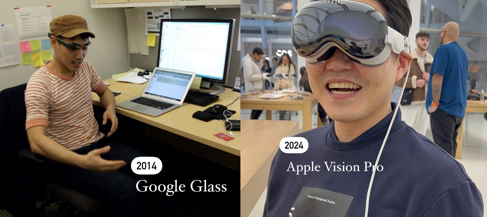
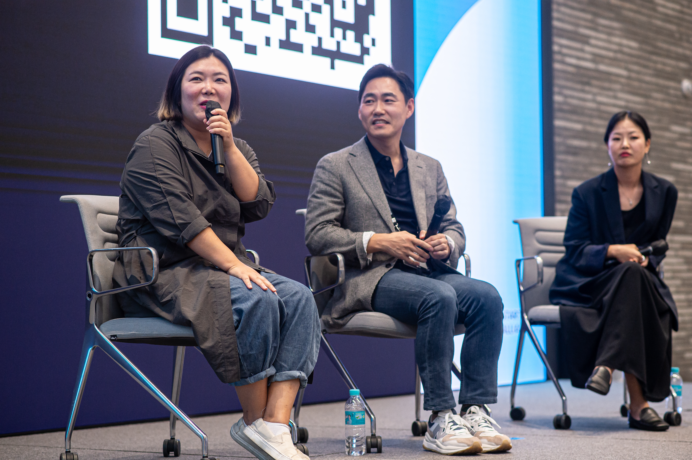
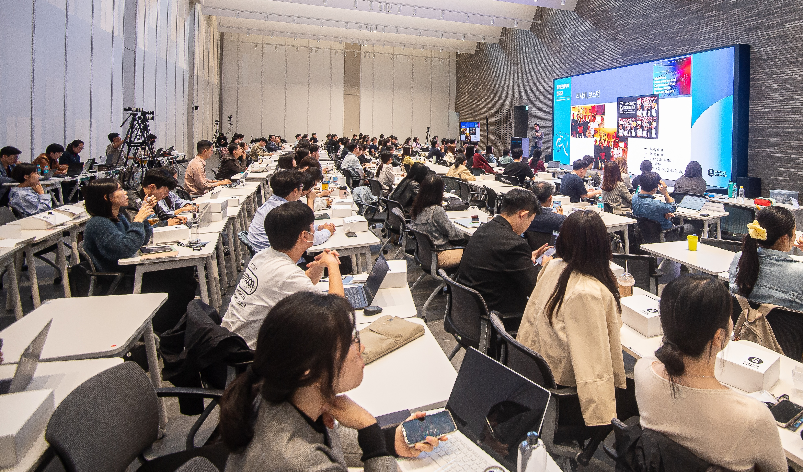
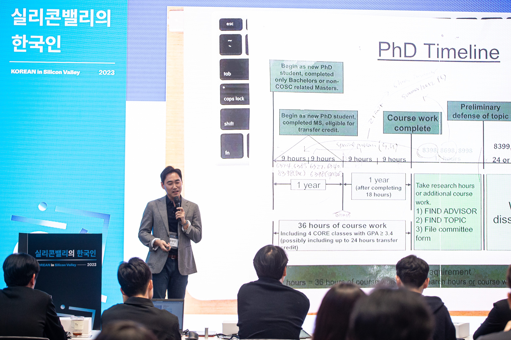
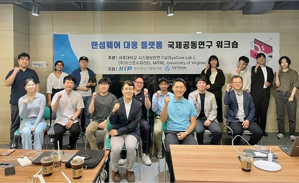
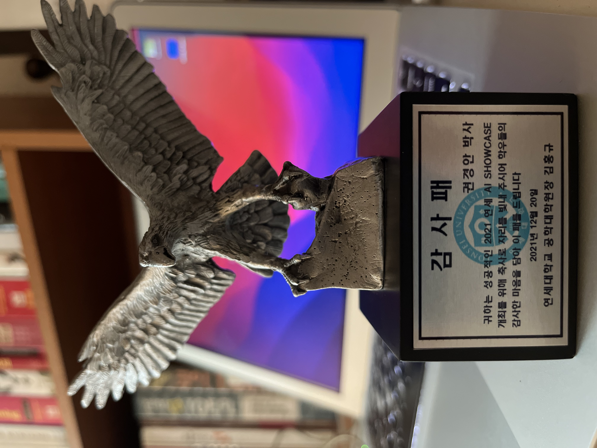

Apart from being a software engineer, I enjoy most of my time being outdoors and mountain hiking. I am an avid tennis player and a singlespeed cyclist. Also, I spend a large amount of my free time
exploring the latest technology advancements in the front-end, back-end development, and data science world.
Conferences and Workshops

Google Glass in research (2014) and Apple Vision Pro in demo (2024)

Silicon Valley in Korean 10주년 (실밸한) in 2023

Silicon Valley in Korean 10주년 (실밸한) in 2023

Silicon Valley in Korean 10주년 (실밸한) in 2023Silicon Valley in Korean 10주년 (실밸한) in 2023

Workshop at Sejong University in 2023

감사패, 연세대학교 AI Showcase 연사 (2021)at Workwith Craig Federighiwith Dr. Dennis Hongwith Dr. Sung Kimwith Dr. Ioannis Pavlidiswith Dr. Alex Leewith Dr. Jeho ParkUNLV, Las VegasIEEE VIS, ParisUbicomp, SeattleSciTS, PhoenixNSM, HoustonTIMES, HoustonName tags collection.
Backpacking and Hiking
Minnewaska State Park, NYMount Monadnock, NHMount Washington, NHBig Bend National Park, TXNew Delhi, IndiaAnnapurna, Nepal
Golf and Tennis
Needham, MARice University, Houston
Bicycle
Boston Bike PartyCharles River, BostonDowntown, HoustonTexas Medical Center, Houston